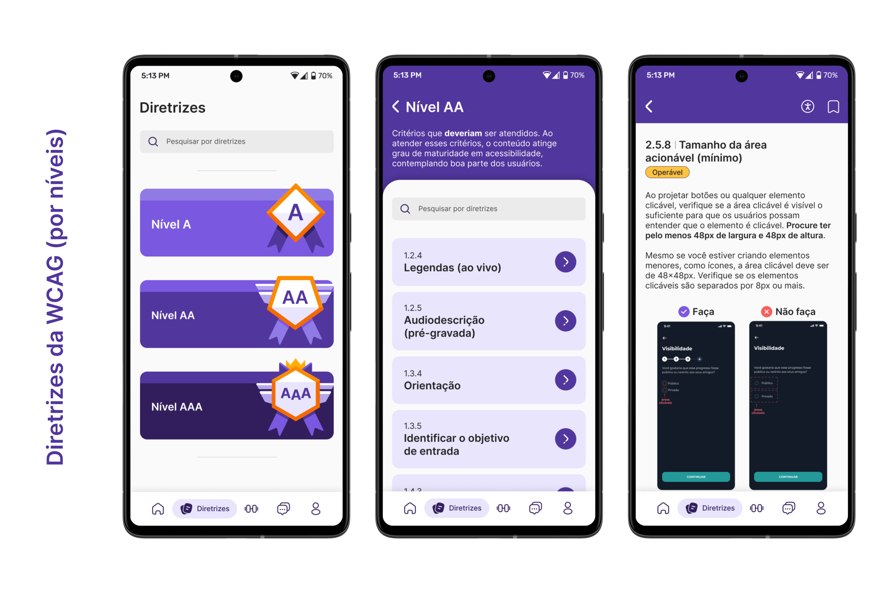
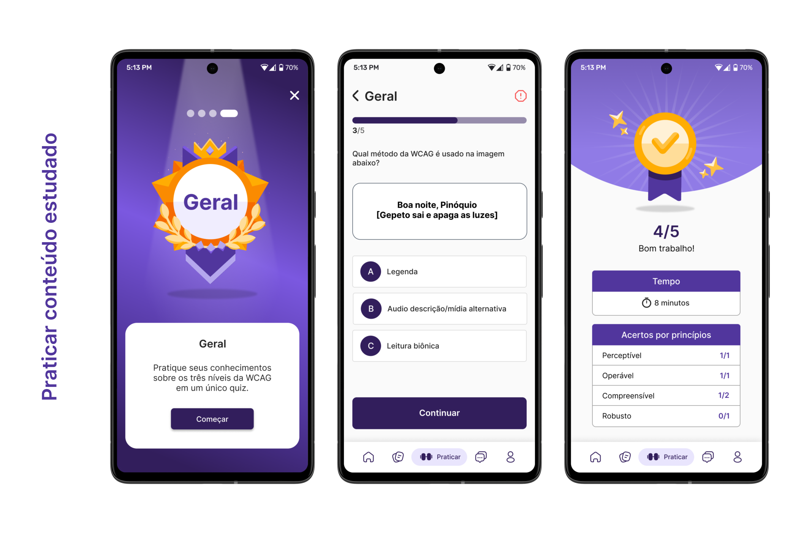

educaWCAG
Overview
Estudo de caso realizado durante o módulo de Projeto Digital (semestre 2023.1) do curso de Design da Universidade Federal de Santa Catarina, sob orientação dos professores André Schlemmer, Cláudia Regina Batista e Luciane Maria Fadel. O aplicativo educaWCAG busca popularizar as diretrizes de acessibilidade e torná-las mais presentes em projetos digitais de design.
Equipe
Giovana Santos, Djulia dos Santos e Matheus May.
Minhas responsabilidades
Participei de todas as fases do desenvolvimento do projeto, desde as pesquisas iniciais até a elaboração dos wireframes, testes de usabilidade e prototipagem.
Ferramentas utilizadas


Problema
A inclusão de métodos que proporcionam acessibilidade, mesmo que esteja em muitas pautas da atualidade, ainda não é suficientemente implementada. Essa causa se da por falta de investimentos financeiros, mas principalmente pela falta de conhecimento e estudo das diretrizes e boas práticas que possibilitam mais acessibilidade.
Objetivo
Reorganizar o site da WCAG em um aplicativo, de uma maneira mais visual e interessante. Visando uma maior popularização, acessibilidade e consumo das diretrizes, para aplicação cotidiana em projetos de design.
Processo
Para o desenvolvimento do projeto, escolheu-se aplicar o Método Iterato, apresentado no artigo “Iterato: método para o design de objetos digitais interativos” (GONÇALVES; FADEL; BAPTISTA; WOLOSZYN, 2022), fundamentado pela ISO 9241 - 2011, e é utilizado no Módulo de Projeto Digital, que compõe o currículo do curso de Bacharelado de Design da Universidade Federal de Santa Catarina (UFSC).
O método se fundamenta no design centrado no ser humano (DCH) e é organizado em fases que se repetem em um ciclo contínuo, o que o caracteriza como iterativo. Essa abordagem permite voltar a estágios anteriores do processo, se necessário, e aprimorar o projeto por meio de avaliações constantes, visando alcançar resultados mais precisos.

Pesquisa com usuários
Foram conduzidas entrevistas com dois designers formados e atuantes na área, dois estudantes de design e um membro do corpo docente do curso de Design da UFSC, com o propósito de:
- Esclarecer dúvidas do grupo sobre a aplicação das diretrizes de acessibilidade em materiais web;
- Investigar o quanto o público-alvo sabe sobre o assunto;
- Descobrir o nível de interesse do público-alvo em relação o tema;
- Propor uma nova forma de apresentar essas diretrizes.
A seguir serão apresentados alguns dados coletados que consideramos relevantes:
Persona
Após a conclusão das entrevistas e análise dos resultados, foi desenvolvida uma persona com base nos dados coletados para representar o público-alvo do projeto.

Histórias do usuário

Quadro de requisitos
Nesta etapa foram definidos os requisitos que ditariam a continuação do projeto, trazendo funcionalidades e conteúdos que o aplicativo apresentará no produto final. Os requisitos de projeto são organizados em baixa, média e alta prioridade.

Arquitetura da informação
Wireframes
Para dar início ao design do aplicativo, foi fundamental criar wireframes de média fidelidade. Isso permitiu entender a estrutura das páginas e determinar as ações necessárias, enquanto se avaliava o fluxo de informações. A seguir, são apresentadas algumas telas desenvolvidas durante esta etapa:

Guia de estilo
Identidade visual

Detalhes técnicos
Para o desenvolvimento do aplicativo foi utilizada as dimensões de tela de 360px de largura por 800px de altura. Além disso, o grid de construção segue a indicação do Google Material Design com 4 colunas (margens e gutter de 16px).
Os elementos visuais e de interação também seguiram as guidelines do Material, utilizando dimensões múltiplas de 8, ou em casos específicos, múltiplas de 4. Garantindo a aderência ao grid e facilitando a diagramação.
Para a tipografia, foi utilizado o Type Scale Generator - utilizando a tipografia Inter -, mas a equipe de projeto fez adequações, não seguindo todas as dimensões indicadas na ferramenta.

Paleta de cores

Tipografia

Iconografia
Componentes

Ilustrações

Resultado
Telas iniciais do aplicativo
Acesso rápido à artigos
Sessão de diretrizes da WCAG dividas em níveis
Sessão para praticar os conteúdos aprendidos
Sessão com checklist para avaliar o quão acessível seu projeto está
Sessão dedicada ao fórum da comunidade educaWCAG

Teste de usabilidade
Contextualização
Os testes foram realizados com 3 participantes, sendo:
- Estudante de design da UFSC e estagiária em UX/UI;
- Designer formado e UX/UI designer;
- Designer formado;
Os protótipos foram desenvolvidos e acessados utilizando o Figma e/ou Figma Mirror. Todas as entrevistas foram realizadas de forma online pelo Google Meet, com os usuários compartilhando suas telas.
Durante a realização do teste, um dos membros da equipe fez o intermédio com o usuário enquanto os outros dois estavam responsáveis pelas anotações/gravação. Essas funções foram alteradas conforme o participante.
Registro de dados: observação direta, filmagem, gravação de tela e entrevista.
Apoio: anotações em documento do Google.
Cenário
“Você é a Roberta, designer que trabalha para uma empresa de tecnologia. Você quer começar a implementar em seu trabalho conceitos de acessibilidade, mas seu dia é bem corrido, e você está buscando uma forma mais organizada de ver o conteúdo da WCAG, pois quando tentou ir pelo meio mais tradicional (site), se sentiu confusa e desmotivada, por isso você baixou esse aplicativo que te recomendaram.”
Tarefas
- Fazer o cadastro no aplicativo e passar pelo onboarding;
- Salvar a diretriz “1.4.3 - Contraste (mínimo)” e consultar ela na sessão de salvos;
- Praticar o conteúdo aprendido;
- Acessar o fórum e interagir;
- Usar o checklist.
Resultados obtidos
Protótipo navegável
Caso não carregue, clique aqui para abrir em uma nova aba do navegador.
Vídeo promocional
Após concluir todas as fases do projeto, assumi a responsabilidade pela elaboração do vídeo promocional do aplicativo educaWCAG. Utilizei o Adobe After Effects para criar e editar o vídeo, garantindo um resultado final de qualidade e impacto.